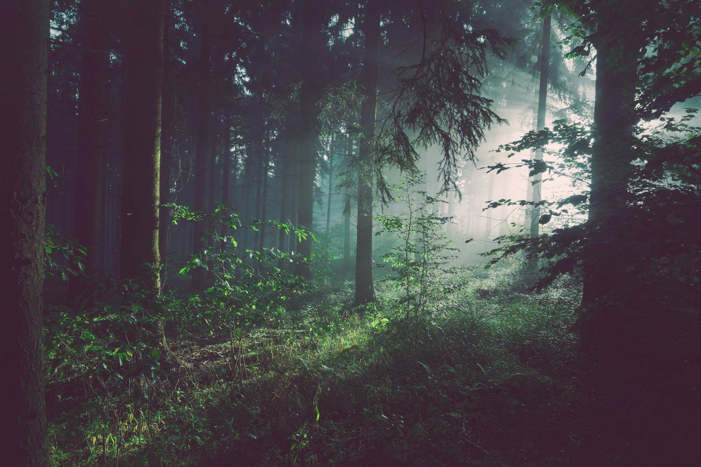
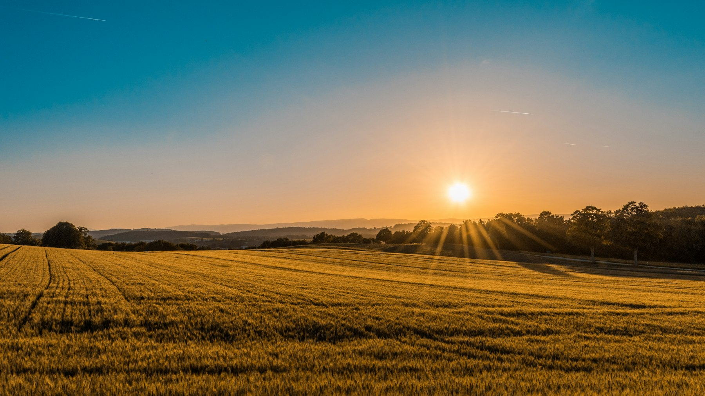

SAMPLE PARTNER
Fecon-class head
Forestry mulching attachment — typical of this trade. Not a signed deal; named when the owner confirms.

We mulch or cut-and-stack according to what the next use needs. Fence rows that must remain wildlife cover are flagged, not flattened. Default is mulching in place as a natural mulch layer. Tracked machines (remote-capable where the bank or wet draw demands it). Stumps can stay low for a later plot or come out if a driveway is the real goal.
Ground clearing · sample from $185 / hour machine time. Labeled for this sample only — not a bid, not an offer.

Sound familiar?
More than a brush cut
Mulching in place grinds standing growth into a mat that breaks down and feeds the ground — no burn pile, no windrow to deal with later. A cheap flail or brush-hog pass knocks the same stems sideways without killing the root, and most of it is back up twice as thick within two seasons. We also clear selectively: fence-line cover you want to keep gets flagged before the machine gets there, not flattened along with everything else.
When clearing is the wrong tool
Mature merchantable timber is not a mulching job — that’s a timber sale or a logger’s call, and we’ll say so instead of running a mulching head through trees worth more standing than ground up. Solid rock benches or heavy stump fields sometimes need an excavator day, not a mulcher pass, and we’ll scope it that way.
SAMPLE · video coming
Placeholder job-walkthrough cards linking to the gallery’s video wall. No real video is embedded yet — no view or subscriber counts.
On this job
We spec tools and products that finish the ground. Partnerships will be named when the owner confirms them. Not signed deals. No brand logos.
SAMPLE PARTNER
Fecon-class head
Forestry mulching attachment — typical of this trade. Not a signed deal; named when the owner confirms.
SAMPLE PARTNER
Compact track loader
Carrier for mulch heads, trail cuts, and pad work. Fleet placeholder.
SAMPLE PARTNER
Rotary cutter
Batwing / large-plot mowing. Class of tool, not a claimed brand deal.